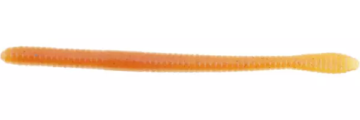

Weightless Worm Techniques and Tactics
I've had smashing success bass fishing with a straight-tailed, weightless worm. It excels in shallow water. I use this lure when I want to work a long section of bank (on a pond) or when there is shallow cover (rocks, logs, weeds, docks). I have several different tactics I use with a weightless worm to catch fish in all parts of the water column - top, middle, and bottom.
Surface
Working the worm on the surface with quick, aggressive twitches will imitate prey struggling to swim and escape a predator, luring bass in. When bass are active, this is a great tactic, but can spook them any other time.
Middle/Bottom
I use this tactic on longer stretches of bank. With the weightless worm (or any lure for that matter), long casts are imperitave. A long cast enables you to put the lure in front of [possibly] more fish. Lighter line (<=12 lb test) and a long, sensitive rod will really help get the light worm out there. After I cast, I like to let the lure fall a bit. The soft splash usually won't scare any fish nearby, and oftentimes attracts them to my worm. I then start working it back. I'll do a random sequence of twitches and pauses, making sure the worm is well below the surface, targetting bass at the bottom or the middle of the water column. This will work well for slightly finnicky fish.
Bottom
When fish are near the bottom (especially near cover), I'll lightly pitch the worm right on top of the cover the fish could be under. The worm slowly fall and quivers on the way to the bottom, and fish almost always inhale it on the fall. If that doesn't get 'em, the tail of the worm rising on the bottom most certainly will. For even more finnicky fish, I'll cast beyond the cover, quietly work the worm over to it, and let the lure fall.
The Berkley Powerbait Nightcrawler
My personal go-to weightless worm is the Berkley powerbait nightcrawler (pictured above). The slightest rod tips or changes in retrieve speed make the body squirm and twitch. It's bouyancy paired with a light offset hook give the worm an uber-slow fall through the water; the worm will also flutter the whole way down, and rise tail up once it hits bottom. These small things can mean the difference between catching fish and just fishing. Only downside is the worm isn't as durable as others on the market. But hey, you trade durability for more squirminess.